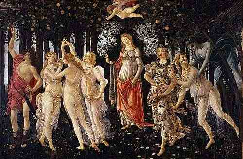

La Primavera — "A Primavera" — foi pintada por Sandro Botticelli entre 1477 e 1482, por encomenda da família Médici de Florença. Com quase três metros de largura, a tela é uma das obras mais enigmáticas do Renascimento: nenhum documento da época explica seu significado, e os estudiosos ainda debatem sua leitura. O que se sabe é que ela é profundamente filosófica — inspirada no Neoplatonismo de Marsílio Ficino e nos poemas de Ovídio e Lucrécia.
A cena se passa num jardim intemporal, provavelmente o jardim de Vênus. O piso é coberto de mais de 500 espécies de flores identificáveis — botânicos confirmaram que Botticelli as pintou com precisão científica. As laranjas ao fundo são as mele d'oro, frutos dourados do paraíso. A luz é difusa, sem sombra — o tempo aqui não existe.
A leitura neoplatônica mais aceita é que a pintura representa a ascensão da alma: da paixão bruta de Zéfiro, passando pela transformação de Flora, pelo equilíbrio de Vênus, pela harmonia das Graças, até a contemplação pura de Mercúrio. É um mapa da evolução — de dentro para fora, de baixo para cima, do desejo à sabedoria.
Essa é a filosofia que estrutura a Primavera AI: cada arquétipo é uma fase, cada fase é uma porta. Você não precisa escolher onde está — a jornada revela.